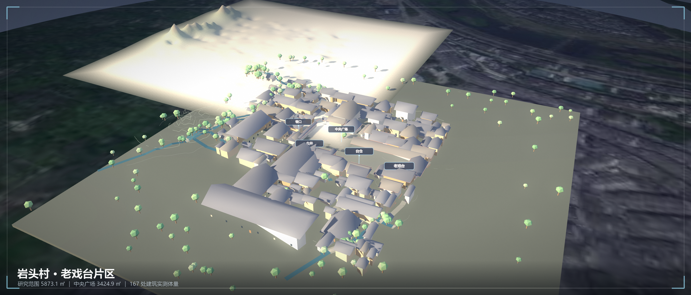
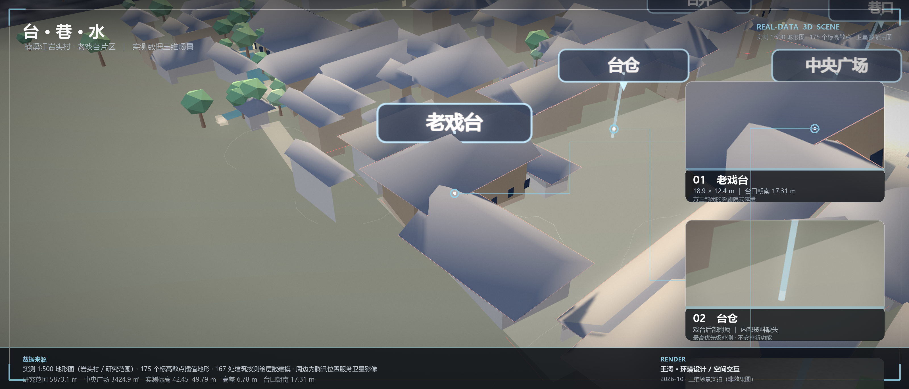
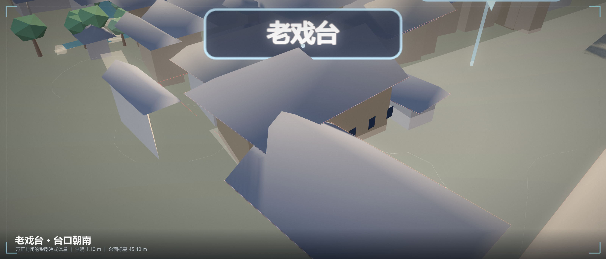
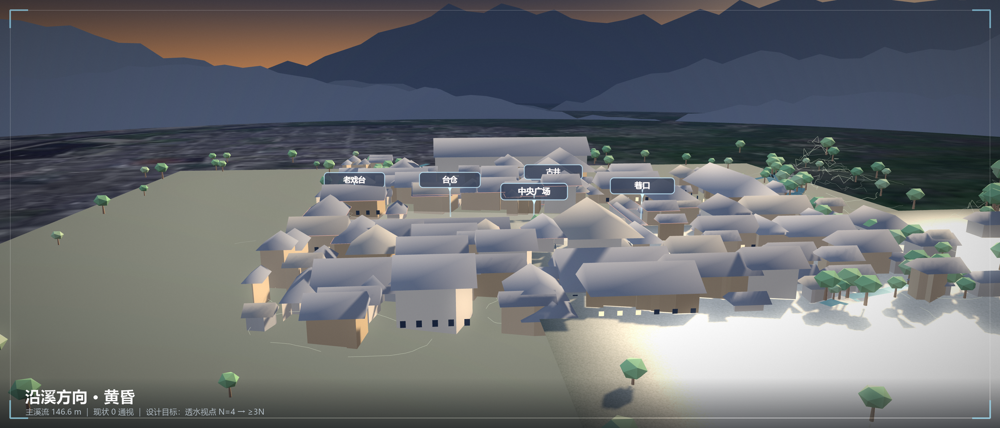

楠溪江岩头村老戏台片区有机更新设计 —— 用实测地形做底，把老戏台、巷弄与水系重新接回村庄的日常。
选题依据、三个研究问题、四个创新点与技术路线，一页页翻给你看 —— 支持手机打开，也可以投屏直接用。

2008 年实测 1:500 地形图的 175 个标高散点插值出真实地形，167 处建筑按测绘层数建体量，叠加水系、巷道与卫星影像底图。可拖动旋转，点开标记看纪录片片段。

方正封闭的影剧院式戏台、四种天气、日照滑杆、13 处构件点击看做法。雨天牌桌自动挪进檐下。

把作品挂在六面墙上，镜头在立方里穿行，作品会自动重排。点墙飞近，双击退回。

台口朝向溪面与远山的机位。檐下半室外遮雨棚、水线导水铺装、共享菜园与古井在这一视角里连成一条动线。
王涛，环境设计专业。做场地策划、空间更新与界面表达 —— 习惯把设计画到能被走进去的程度：先看真实地形，再谈改造。